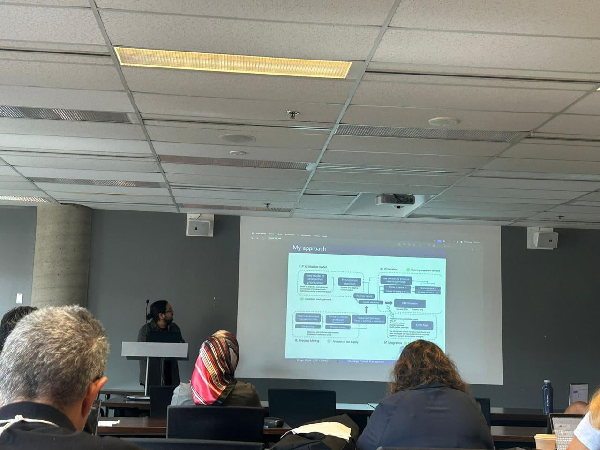

Oncology care pathways
Studying cancer care processes, patient management, and treatment prioritization under resource constraints.
Research · Healthcare Operations · Digital Health
I work at the intersection of oncology, healthcare operations, health data science, and digital transformation. My research focuses on patient prioritization, process mining, discrete-event simulation, and transparent decision support.
About
I am a biomedical engineer and PhD candidate in Engineering and Sciences with the Industry at Pontificia Universidad Católica de Chile, supervised by Professor Alejandro Mac Cawley. I am currently a Visiting Researcher in the Department of Industrial and Operations Engineering at the University of Michigan from August 3 to December 18, 2026, working with Professor Mariel S. Lavieri.
I am also a researcher and Head of Digital Transformation at Chile’s National Cancer Institute. My work connects quantitative methods with healthcare delivery, information systems, and institutional leadership to study how health systems can be better understood, managed, and redesigned.
Research
Studying cancer care processes, patient management, and treatment prioritization under resource constraints.
Using event data to understand observed healthcare pathways, variation, and operational bottlenecks.
Exploring how capacity, prioritization, and workflow scenarios may shape complex healthcare systems.
Connecting research with health information systems, interoperability, technology implementation, and institutional change.
Doctoral research
An applied oncology case study.
My doctoral research develops an applied framework for studying oncology patient management through process analysis, waiting-list prioritization, and simulation. The project connects observed healthcare pathways with operational modeling and decision-support questions in cancer care.
Featured dissemination
Presented at the 2026 SIAM Student Mini-Symposium in Applied Mathematics, University of Michigan. Sponsored by MCAIM.
View all presentations →Publications
Rojas-Torres, D., Mac Cawley, A., Ruiz, A., Lavieri, M. S., Abarca, I., & Flores, F. Public Health Reviews. Under peer review after passing initial editorial screening. PROSPERO CRD420261334566.
International Journal of Medical and Surgical Sciences, 12(1), 1–4. DOI 10.32457/ijmss.v12i1.2997.
Journal of Stroke and Cerebrovascular Diseases, 31(6), 106412. DOI · PMID 35354109.
Revista Médica de Chile, 147(9), 1107–1113. DOI.
Case illustrations from a tertiary cancer center.
A process mining and simulation case study at a high-complexity cancer center.
Presentations

SIAM Student Mini-Symposium in Applied Mathematics, University of Michigan. Sponsored by MCAIM.
Biomedical Engineering Colloquium Series, University of Valparaíso.
LXXIV Congress of the Chilean Society of Neurology, Psychiatry, and Neurosurgery.
XXXII Chilean Public Health Conference, University of Chile.
IEEE EMBS International Biomedical Engineering Student Conference & VIII Annual Biomedical Engineering Congress, University of Concepción.
Teaching and mentoring
Guest Lecturer at Universidad del Desarrollo (2023–2024), teaching Health Processes and Information Systems to undergraduate Medical Technology students.
Mentor at Universidad de Valparaíso (2015), supporting students in mathematics, physics, biology, study skills, and academic integration.
Experience training healthcare professionals and coordinating clinical and technical teams during digital health and biomedical technology projects.
Connecting applied research, data, systems, and institutional practice through interdisciplinary communication and implementation.
Education
PhD Candidate in Engineering and Sciences with the Industry
Pontificia Universidad Católica de Chile · 2021–present
Postgraduate Diploma in Healthcare Institution Management
Universidad de Santiago de Chile · 2018–2019
Civil Biomedical Engineer
Universidad de Valparaíso · 2010–2016
Healthcare leadership
As Head of Digital Transformation at Chile’s National Cancer Institute, I work at the intersection of healthcare delivery, information systems, technology implementation, and institutional coordination. My professional experience includes connecting clinical and technical teams, leading digital initiatives, and supporting the adoption of data and technology in healthcare environments. I currently lead a 10-person interdisciplinary team of developers, engineers, technicians, and clinicians.
Contact
I welcome opportunities for research collaboration, interdisciplinary projects, teaching, and initiatives focused on improving healthcare systems through data, technology, and operations research.